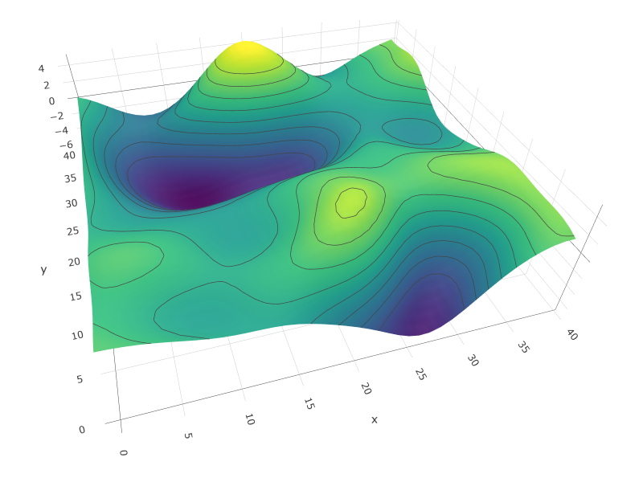
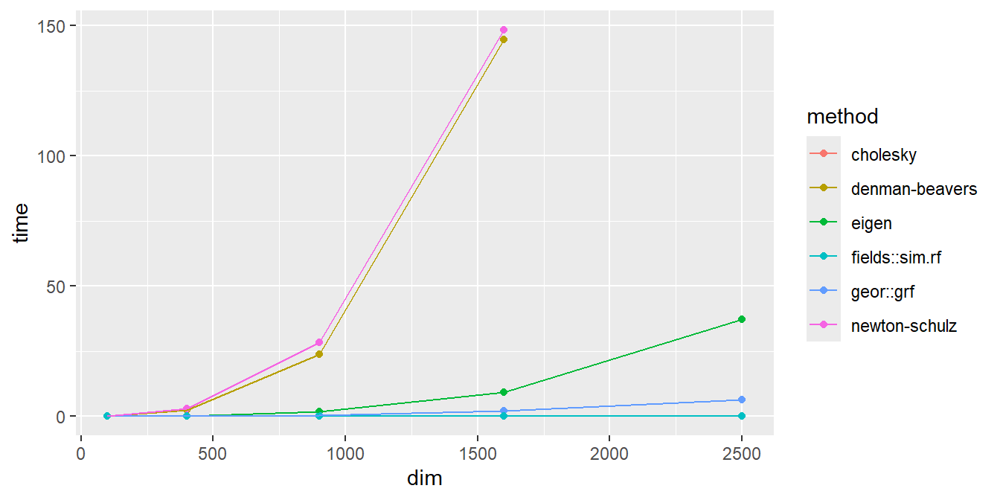

matrix.sqrt.DB <- function(Σ, tol)
{
A <- Σ
B <- diag(nrow(Σ))
ε <- 1
while(ε > tol) {
A.old <- A
A <- (0.5)*(A.old+solve(B))
B <- (0.5)*(B+solve(A.old))
ε <- max(abs(A-A.old))
}
return(list("Σ.sqrt"=A, "Σ.sqrt.inv"=B))
}Generating Random Fields
R
Simulation
Computation
Data Viz
How do researchers generate high-dimensional normal variates for use in simulation studies?

Motivation
The Multivariate Normal (MVN) distribution is ubiquitous in Statistics, partly because of its “nice” properties and partly because of the asymptotic results surrounding it (e.g. the CLT). It comes as no surprise, then, that generating pseudorandom vectors from a MVN distribution is a common task in both research and industry. If we wish to apply a statistical method to a large/high-dimensional dataset, it’s important that we assess our method using an equally-large simulated dataset with similar (but known) properties.
In particular, many disciplines use models involving Gaussian Random Fields (GRFs). A GRF can be thought of as a MVN vector where each component has some known topological information associated with it – e.g. its location in Euclidean space. We often see GRFs written as \(\bm{Y} = (Y_1(\bm{x}_1), ..., Y_{p}(\bm{x}_p))'\), where \(Y_{i}\) is the (Normally-distributed) random value associated with the known location \(\bm{x}_i\). This topological information is then used to define the covariance between the \(Y_{i}\)’s as a function of the distance between their \(\bm{x}_i\)’s. For example:
These GRFs are used to model, among other things,
- The Cosmic Microwave Background Radiation (CMBR), which enables Cosmologists to make inference about how the universe was formed
- Neural Activity in the brain, which enables Neuroscientists to make inference about how different regions of the brain are connected
- Permeability Coefficients of Geological Formations, which enables Geologists to make inference about how matter is distributed in Earth’s crust
Methods
On the surface, generating a realization of a GRF (or any MVN vector) seems easy. We know from the properties of Normal distributions that
- if \(Z_1, ..., Z_p \iid \Normal{0,1}\), then \(\bm{Z} = (Z_1, ..., Z_p)' \sim \MVN{\bm{0}, \bm{I}_p}\)
- if \(\bm{Z} \sim \MVN{\bm{0}, \bm{I}_p}\), then (\(\bm{AZ}+\bm{b}) \sim \MVN{\bm{b}, \bm{AA}'}\)
So, a natural first-attempt at realizing a vector \(\bm{Y} \sim \MVN{\bm{μ}, \bm{Σ}}\) is as follows:
- Generate \(Z_1, ..., Z_p \iid \Normal{0,1}\)
- Set \(\bm{Z} = (Z_1, ..., Z_p)'\)
- Calculate the matrix \(\bm{A}\) such that \(\bm{AA}' = \bm{Σ}\) \ (the “square root” of \(\bm{Σ}\), often denoted \(\bm{Σ}^{1/2}\))
- Set \(\bm{Y} = \bm{AZ} + \bm{μ}\)
Although this method is mathematically sound, step (3) is a serious computational burden – particularly due to the dimensionality of \(\bm{Y}\). In the rainfall example above, suppose instead that the researcher measured rainfall on a larger grid – say \(100×100\) instead of \(8×8\). Then, we have \(\text{dim}(\bm{Y})=10,000\) which means we have to decompose a \(10,000×10,000\) covariance matrix!
Some methods for approximating \(\bm{Σ}^{1/2}\) involve generalizations of univariate optimization techniques (basically minimizing the function \(f(\bm{A}) = \bm{AA}' - \bm{Σ}\)). Two worth mentioning (despite being outdated) are the Denman-Beavers and Newton-Schultz algorithms:
Denman-Beavers:
- Initialize \(\bm{A}^{(0)} = \bm{Σ}\)
- Initialize \(\bm{B}^{(0)} = \bm{I}_{p}\)
- Until convergence, iterate: \[ \left\{ \begin{aligned} \bm{A}^{(k+1)} &= \left(\tfrac{1}{2}\right) \left( \bm{A}^{(k)} + \left[ \bm{B}^{(k)} \right]^{-1} \right) \\ \bm{B}^{(k+1)} &= \left(\tfrac{1}{2}\right) \left( \bm{B}^{(k)} + \left[ \bm{A}^{(k)} \right]^{-1} \right) \end{aligned} \right\} \]
- Assuming \(K\)-many iterations until convergence, return \(\hat{\bm{Σ}}^{1/2} = \bm{A}^{(K)}\) and \(\hat{\bm{Σ}}^{-1/2} = \bm{B}^{(K)}\)
import numpy as np
def matrix_sqrt_DB(Σ, tol):
A = Σ.copy()
B = np.eye(Σ.shape[0])
ε = 1
while ε > tol:
A_old = A.copy()
A = 0.5 * (A_old + np.linalg.inv(B))
B = 0.5 * (B + np.linalg.inv(A_old))
ε = np.max(np.abs(A - A_old))
return {"Σ.sqrt": A, "Σ.sqrt.inv": B}Newton-Schultz:
- Initialize \(\bm{A}^{(0)} = \bm{Σ}/\|\bm{Σ}\|_{F}\)
- Initialize \(\bm{B}^{(0)} = \bm{I}_{p}\)
- Until convergence, iterate: \[ \left\{ \begin{aligned} \bm{A}^{(k+1)} &= \left(\tfrac{1}{2}\right) \bm{A}^{(k)} \left( 3\bm{I}_{p} - \bm{B}^{(k)} \bm{A}^{(k)} \right) \\ \bm{B}^{(k+1)} &= \left(\tfrac{1}{2}\right) \left( 3\bm{I}_{p} - \bm{B}^{(k)} \bm{A}^{(k)} \right) \bm{B}^{(k)} \end{aligned} \right\} \]
- Assuming \(K\)-many iterations until convergence, return \(\hat{\bm{Σ}}^{1/2} = \bm{A}^{(K)}\sqrt{\|\bm{Σ}\|_{F}}\) and \(\hat{\bm{Σ}}^{-1/2} = \bm{B}^{(K)}/\sqrt{\|\bm{Σ}\|_{F}}\)
matrix.sqrt.NS <- function(Σ, tol) {
Σ.Fnorm <- norm(Σ, type="F")
A <- Σ / Σ.Fnorm
B <- I <- diag(nrow(Σ))
ε <- 1
while(ε > tol) {
A.old <- A
X <- (3*I - B %*% A.old)
A <- (0.5)*(A.old %*% X)
B <- (0.5)*(X %*% B)
ε <- max(abs(A.old-A))
}
return(list("Σ.sqrt"=A*sqrt(Σ.Fnorm), "Σ.sqrt.inv"=B/sqrt(Σ.Fnorm)))
}import numpy as np
def matrix_sqrt_NS(Σ, tol):
Σ_Fnorm = np.linalg.norm(Σ, 'fro')
A = Σ / Σ_Fnorm
B = I = np.eye(Σ.shape[0])
ε = 1
while ε > tol:
A_old = A.copy()
X = (3 * I - B @ A_old)
A = 0.5 * (A_old @ X)
B = 0.5 * (X @ B)
ε = np.max(np.abs(A_old - A))
return {"Σ.sqrt": A*np.sqrt(Σ_Fnorm), "Σ.sqrt.inv": B/np.sqrt(Σ_Fnorm)}For both of these algorithms, \((\bm{A}^{(k)}, \bm{B}^{(k)}) → (\bm{Σ}^{1/2}, \bm{Σ}^{-1/2})\) quadratically… However, neither of these algorithms are particularly clever. They are general-purpose tools for calculating matrix square-roots, and do not leverage any of the known properties of covariance matrices. We can speed things up considerably if we notice that \(\bm{Σ}\) is both symmetric and positive-semi-definite!
In particular, the Cholesky Decomposition and the Eigen-Decomposition are two well-studied matrix factorizations that can be applied in this scenario. These methods both involve Gaussian-Elimination-style algorithms, so their details will be omitted; but, the important part to understand is that
- the Cholesky decomposition calculates \(\bm{Σ}^{1/2}\) directly
- the Eigen-decomposition calculates the matrices \(\bm{Q}\) and \(\bm{Λ}\) such that \(\bm{Σ} = \bm{QΛQ}'\) which can then be used to calcuate \(\bm{Σ}^{1/2} = \bm{QΛ}^{1/2}\)
Because these matrix-factorization methods are so well-studied, we know for a fact that both of them operate in \(\mathcal{O}(p^3)\) time (where \(p = \text{dim}(\bm{Y})\)), meaning they scale poorly.
If our goal is to generate a GRF specifically, and not just any MVN vector, there is another method that does not involve finding \(\bm{Σ}^{1/2}\)… Although the details are beyond the scope of this report, the idea is that \(\bm{Σ}\) has additional structure to it that can be taken advantage of when the locations \(\bm{x}_1, ..., \bm{x}_p\) form a grid in Euclidean space (the most common setting for GRFs). In this case, a clever algorithm known as Circulant Embedding can be used, which relies on the Discrete Fourier Transform.
Simulation
To demonstrate the difference in computational efficiency of these different MVN-generating methods, we have simulated the generation of \(\bm{Y} \sim \MVN{\bm{μ}, \bm{Σ}}\) for various dimensionalities – namely, \(p ∈ \{10^2, 20^2, 30^2, 40^2, 50^2\}\) so that these methods can be compared to the GRF-specific Circulant Embedding algorithm.
We also compare the performance of these methods (when implemented by hand) to routines from two pre-existing R packages commonly used in Spatial Statistics : geoR::grf(), which uses the Cholesky-Decomposition method; and fields::sim.rf(), which uses the Circulant Embedding method.
The table below displays the computational time needed to generate 1 realization of \(\bm{Y} \sim \MVN{\bm{μ}, \bm{Σ}}\) (in seconds) for each method\(×\)dimensionality combination, averaged across 3 simulations.
| method | 10×10 | 20×20 | 30×30 | 40×40 | 50×50 |
|---|---|---|---|---|---|
| denman-beavers | 0.07 | 2.43 | 23.74 | 144.64 | - |
| newton-schulz | 0.09 | 3.02 | 28.44 | 148.37 | - |
| cholesky | 0.01 | 0.08 | 0.41 | 2.09 | 6.50 |
| eigen | 0.01 | 0.25 | 1.91 | 9.37 | 37.16 |
| geor::grf | 0.01 | 0.09 | 0.53 | 2.08 | 6.46 |
| fields::sim.rf | 0.01 | 0.01 | 0.01 | 0.02 | 0.03 |
Note that, for \(p=50×50=2500\) dimensions, the iterative methods are omitted as they would crash my R session before converging – however, we can estimate the time taken to be around 600s (10 minutes). Although not discussed previously, a rigorous comparison of these methods would also take into account the storage complexity associated with each method, since a single Covariance matrix could occupy several GB of RAM.
Plotting these results…

Before discussing the results, note that the hand-implemented Cholesky Decomposition method is not seen on the plot above because the performance is almost identical to the geoR::grf() routine (unsurprisingly).
Discussion
From our results above, we notice that
The Denman-Beavers and Newton-Schulz algorithms had the worst performance. This is partly because they are general-purpose tools and not problem-specific tools; but, it is also partly because the other methods are implemented more efficiently (e.g. the Cholesky and Eigen-Decomposition methods rely on well-optimized
FORTRANsubroutines).The Eigen-Decomposition method is noticeably slower than the Cholesky-Decomposition method (the reason why is unclear, but could likely be revealed by digging into the
FORTRANsource code of thechol()andeigen()functions)The Circulant-Embedding method had the best performance by far, and is likely the only method scalable for GRFs with dimensions \(p > 10,000\). However, when running the simulations, this method was also the least stable when the \(γ\) parameter is large (i.e. when correlation decays very slowly with distance). From the
fields::sim.rf()documentation: “The algorithm… may not always work if the correlation range is large. Specifically [when] the weight function obtained from the FFT of the covariance field [has] negative values”
Although the simulations ran were imperfect comparisons, the conceptual takeaway is very clear: computational methods tailored to individual problems – i.e. those that take the most advantage of the problem assumptions – will tend to outperform general-purpose methods.
References
Powell, Catherine Elizabeth. 2013. “Generating Realisations of Stationary Gaussian Random Fields by Circulant Embedding.” In. https://api.semanticscholar.org/CorpusID:14542597.
Song, Yue, Nicu Sebe, and Wei Wang. 2022. “Fast Differentiable Matrix Square Root.” https://arxiv.org/abs/2201.08663.
Vono, Maxime, Nicolas Dobigeon, and Pierre Chainais. 2022. “High-Dimensional Gaussian Sampling: A Review and a Unifying Approach Based on a Stochastic Proximal Point Algorithm.” SIAM Review 64 (1): 3–56. https://doi.org/10.1137/20M1371026.